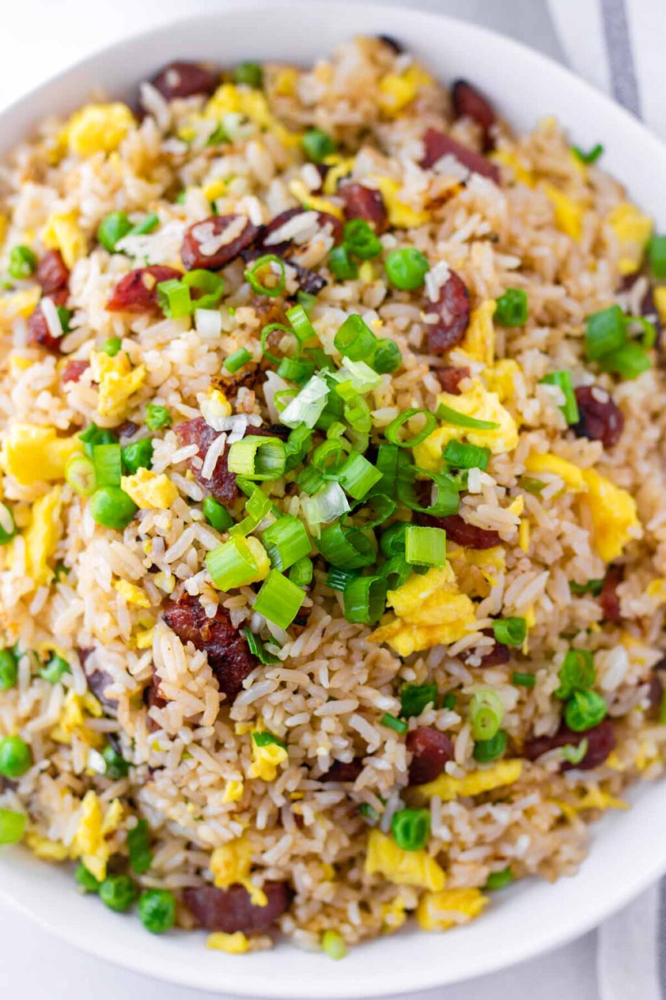

Description
Chinese sweet sausage is very common in Cantonese cuisine. It has a savory, sweet and
smoky flavor profile. This dish takes very little time.
There are several types of delicious Asian cured sausage, but my favorite is the
Cantonese-style sweet sausage. It has a red-ish color and it comes in refrigerated packages. This Chinese sausage fried rice recipe works really well with sweet sausage.
Ingredients
- Chinese Sweer Sausage
- Eggs
- Chopped Scallions
- Minced Garlic
- Oil
- Left-over Rice
- Green peas
- Salt
- Soy Sauce
- Oyster Sauce
- Sesame oil
Steps
- Make the sauce simply by mixing in the soy sauce, oyster sauce, water and sesame oil together in a bowl
- Beat and cook the eggs and set aside.
- In a wok (or large pan), add oil and chinese sausage and cook for a bit.
- Add in garlic and scallions for one minute until fragrant.
- Add in peas and rice into wok/pan. Cook and stir until no clumps of rice.
- Add in sauce and stir until golden brown color.
- Add in eggs, stir fry for a minute or two.
- Serve!